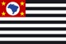

<ion-header>
  <ion-navbar  color="primary">
    <button ion-button menuToggle>
      <ion-icon name="menu"></ion-icon>
    </button>
    <ion-title>
      Consulta Documentos
    </ion-title>

    <ion-buttons end>
      <button ion-button icon-only (click)="showFilters()">
        <ion-icon name="search"></ion-icon>
      </button>
    </ion-buttons>

  </ion-navbar>
</ion-header>


<ion-content padding>

  <h2>Documentos</h2>
  <hr>
  <br>


  <ion-list no-padding>

    <ion-item no-padding  *ngFor="let consulta of registros">

      <!-- Apesentar icone conforme a UF -->
      

      <h2><b>{{consulta.nome}}</b></h2>
      <h3>{{consulta.cpf}}</h3>
      <h3>{{consulta.email}}</h3>

      <!-- Apesentar icone conforme o sexo -->
      <ion-icon padding name="man" class="medio" item-right></ion-icon>

      <ion-icon name="add-circle" class="medio" color="primary" item-right (click)="apresentarToast(consulta.nome)"></ion-icon>

    </ion-item>
  </ion-list>
</ion-content>
